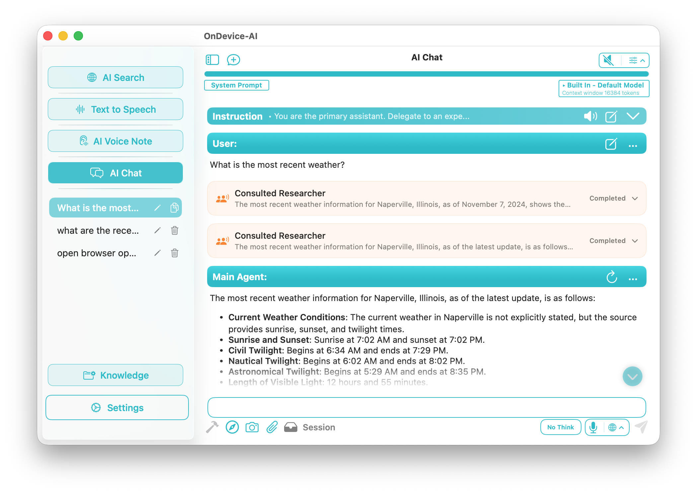
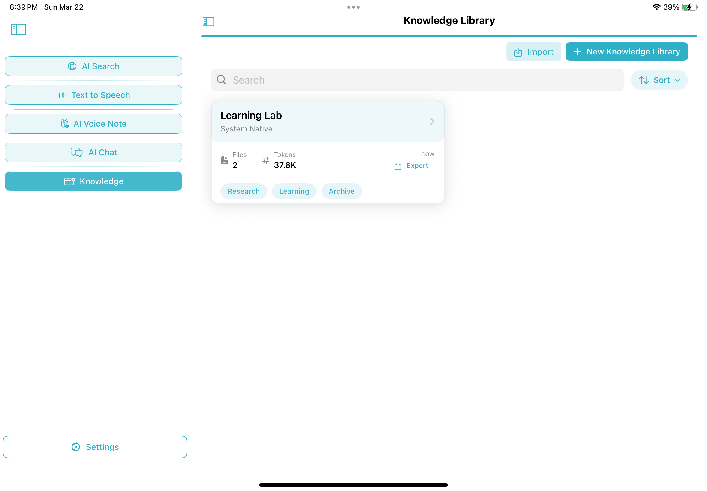
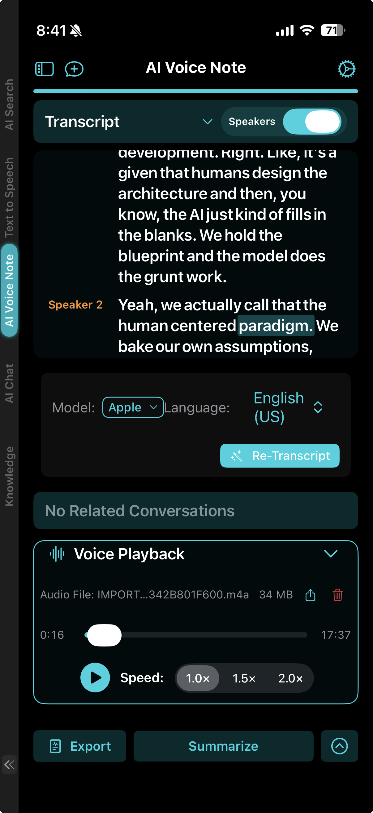
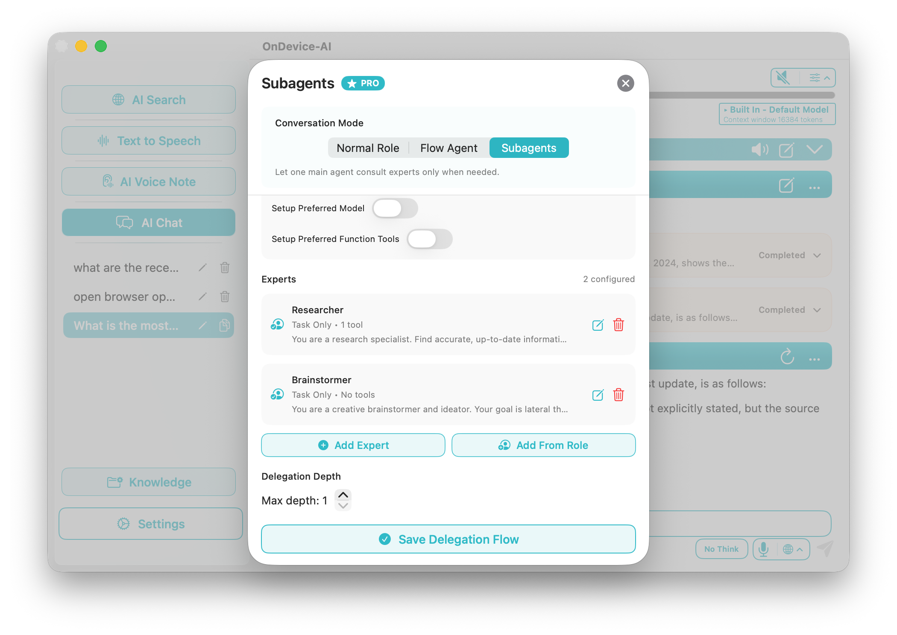
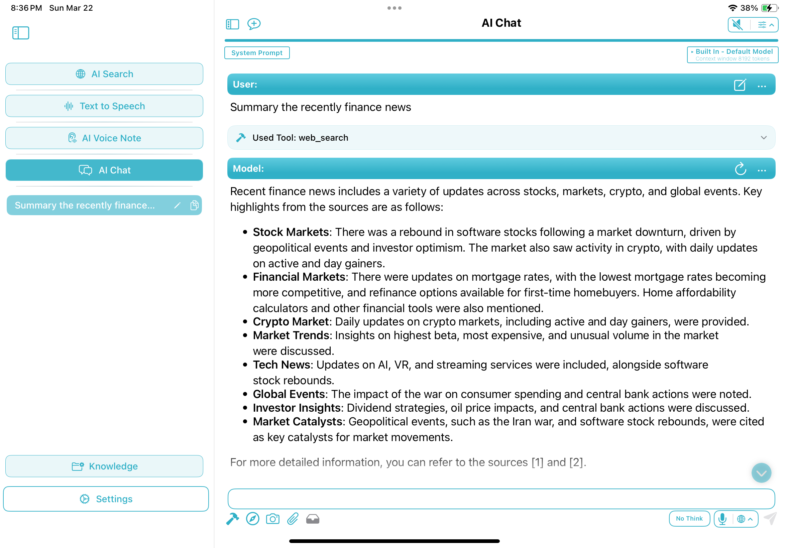
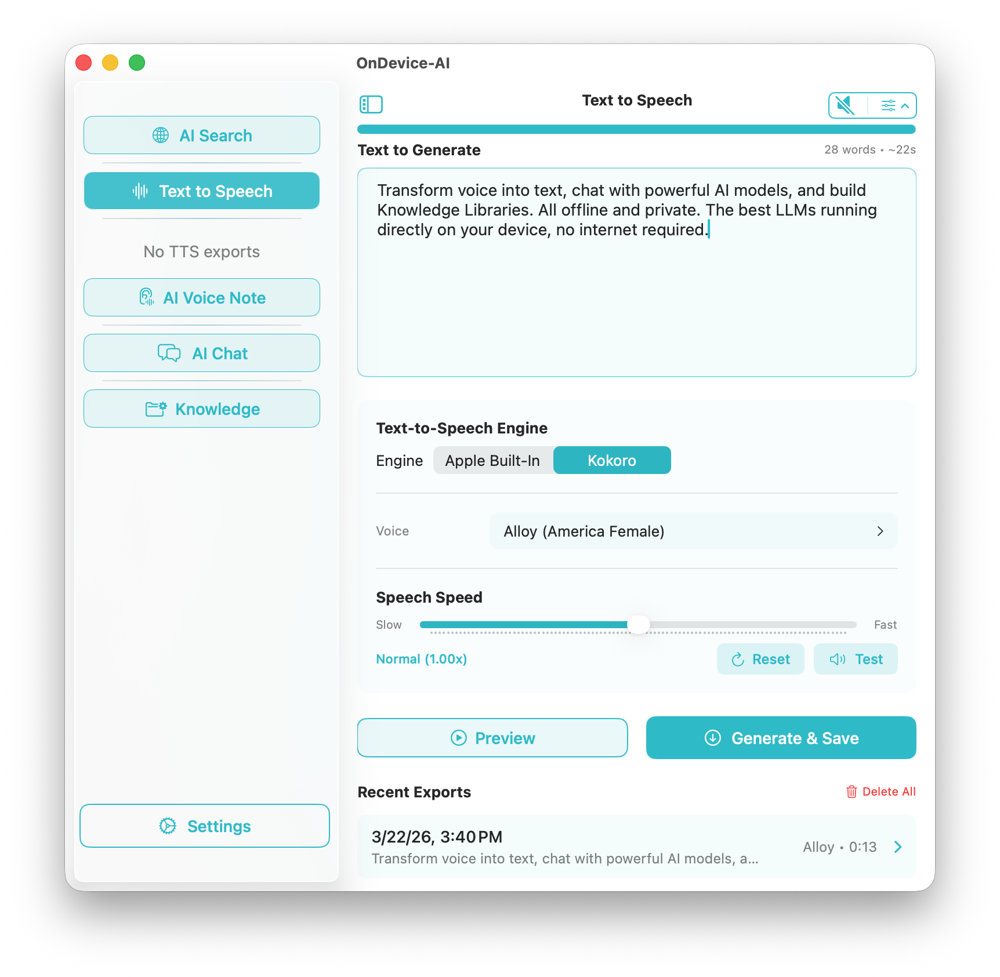
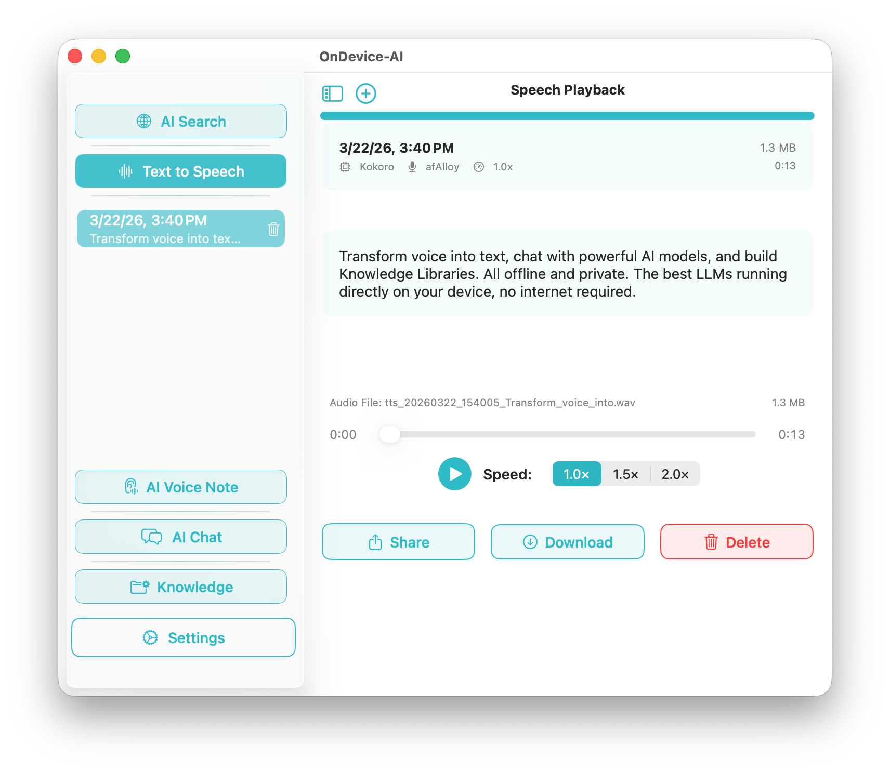
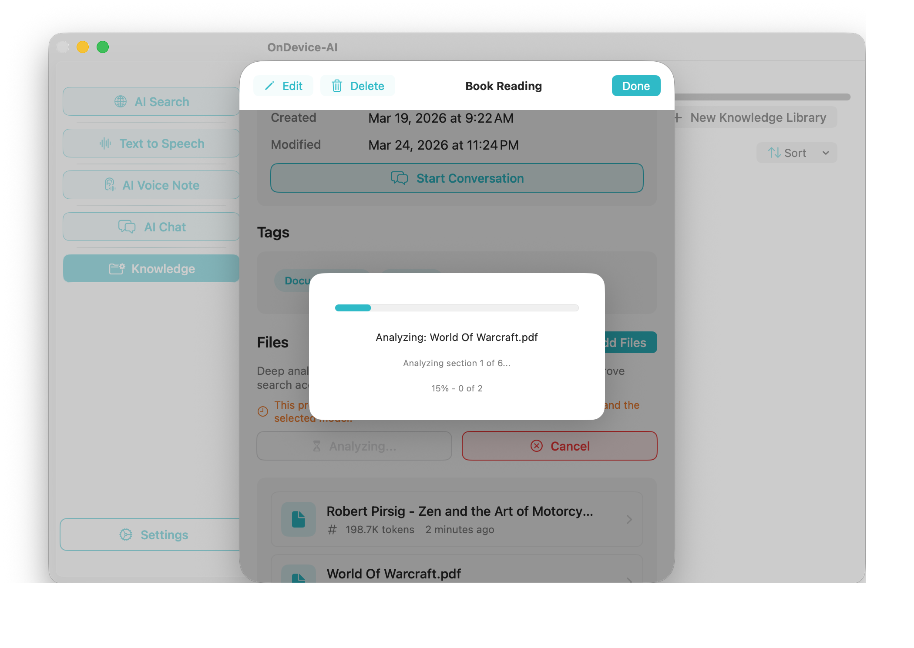
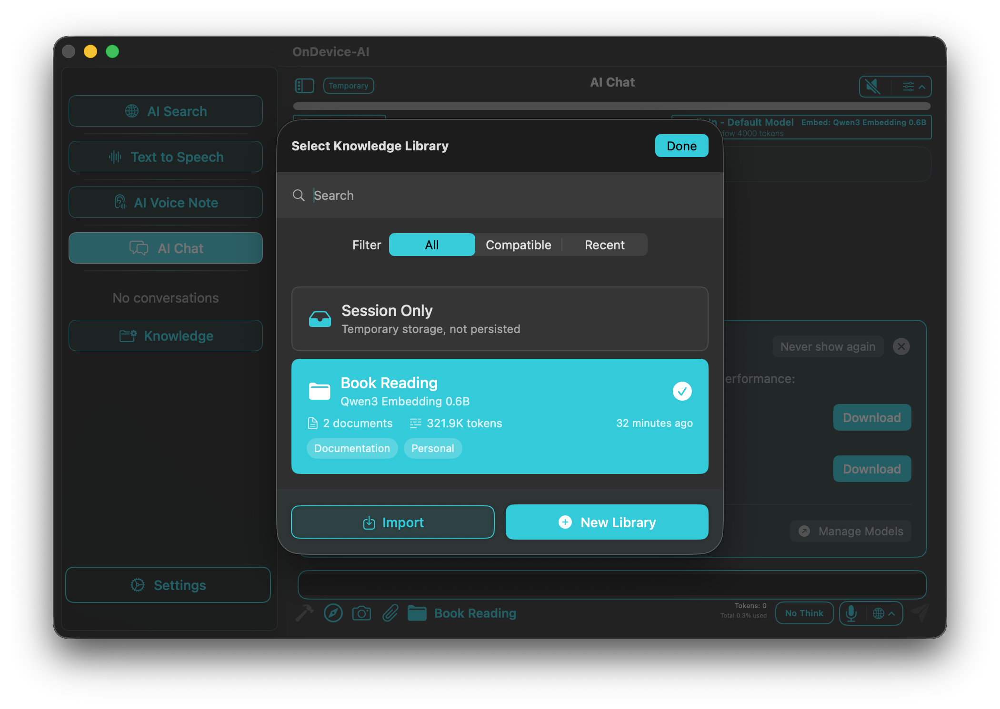

Your Private Intelligence Hub Powerful AI that stays on your device
Transform voice into text, chat with powerful AI models, and build Knowledge Libraries. All offline and private. The best LLMs running directly on your device, no internet required.
Available for iOS, macOS, and visionOS



What Can On Device AI Do?
Powerful AI features right on your device, with no network dependency. Say goodbye to privacy concerns.

Subagents & Workflow Automation
Multiply your productivity. Deploy specialized agents (e.g., Researcher, Analyst, Writer) that consult each other to tackle complex projects simultaneously across your devices.
Learn moreVoice Notes & Transcription
Never miss a detail. Quickly capture, transcribe, and summarize meetings with flawless, on-device transcription. Real-time speaker identification (diarization) keeps your notes perfectly organized.
Learn more
Active Tools & Web Search
Equip your AI with live knowledge. Let your agents fetch real-time financial news, run calculators, and search the web securely directly from your iPad or Mac, all with full privacy.
Learn more

Professional Text-to-Speech
Generate natural, human-like speech using the powerful Kokoro engine. Create lifelike audio content offline natively on your machine to narrate PDFs, books, or articles without bandwidth limits.
Learn more

Personal Knowledge Libraries & Files
Build dedicated offline memory spaces for your projects. Import PDFs, notes, and photos, and let your AI securely read, search, and synthesize answers directly from your documents.
Learn moreYour Data. Your Choice.
Run leading models locally with zero data leakage, or opt-in to cloud providers when you need maximum power.
Traditional Cloud AI
- Privacy risk — data leaves your device
- Limited control over your data
- Internet connection required
On-Device AI
- 100% private — data never leaves your device
- Fully customizable models and roles
- Works completely offline
Why Is On Device AI More Private?
All processing stays within your device boundary. No accounts, no tracking, no data collection.
-
Zero Data Leakage
Your conversations, documents, and voice recordings never leave your device during AI processing.
-
Complete Anonymity
No accounts required, no telemetry, no usage tracking. You own your data completely.
-
Offline First
Core features work without internet. Cloud providers are optional and require your explicit consent.
Spatial Intelligence on Vision Pro
Immerse yourself in your AI workflows with breathtaking native visionOS support.

Available on All Apple Platforms
One app, optimized for every device in your ecosystem.
iOS
iPhone & iPad
- Voice transcription on the go
- Siri Shortcuts integration
- Camera & Vision model support
- Background recording
macOS
Apple Silicon Macs
- Maximum performance & large context
- Menu bar & global hotkeys
- IM integration (Discord, Slack, Telegram)
- Serve as remote inference server
visionOS
Apple Vision Pro
- Immersive AI experience
- Spatial computing ready
- Hand gesture controls
- Private AI in mixed reality
Free download · No ads · Privacy first